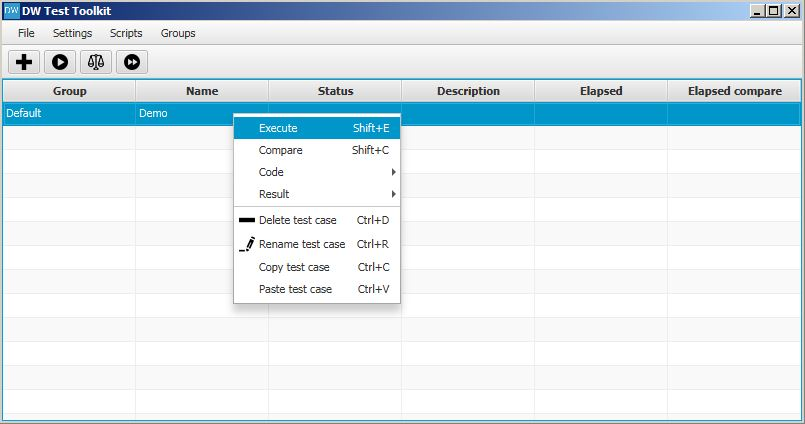
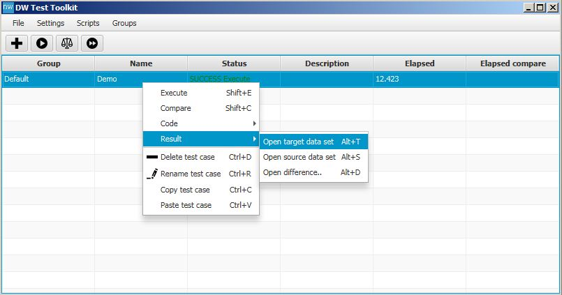
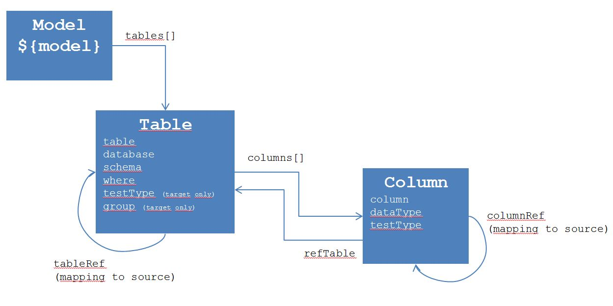
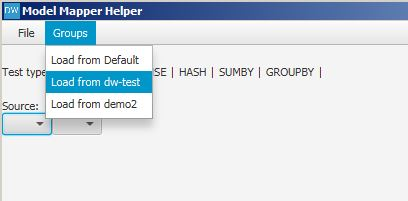
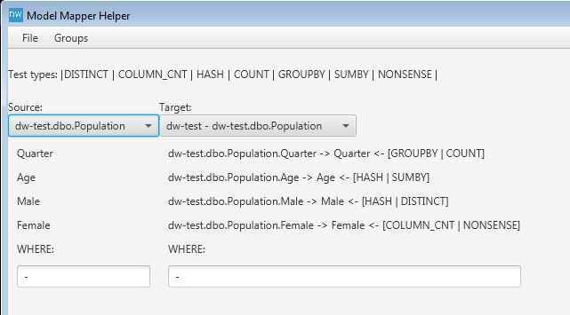

Welcome to DW Test Toolkit.
Data Warehouse Test Toolkit is made to assist you when testing a Data Warehouse and ensure quality. This toolkit allows you to write queries for source and target systems as well as to compare the results and report any differences.
Download/install
Download the latest version, and extract the zip file to your prefered destination.
Java (Oracle) version 8 update 40, or higher is required to run the toolkit. jTds (MS SQL Server) and Oracle JDBC drivers are provided in the distribution.
Run
Navigate to the bin folder, and type
dw-test.bat --gui
To set up connections to source and target databases select Settings->Open file.
 Edit the connection string to match your requirements. Save your settings by clicking File->Save, and close the window.
Edit the connection string to match your requirements. Save your settings by clicking File->Save, and close the window.

Windows Authentication
To use Windows Authentication with MS SQL Server leave out a user name and password from connection string
and download jTDS from https://sourceforge.net/projects/jtds/
extract the zip file and put the SSO directory in PATH (environment variable). For example C:\jtds-1.3.1-dist\x64\SSO for 64-bit environments, or C:\jtds-1.3.1-dist\x86\SSO for 32-bit.
Test case example
Create your first test case select New test case, and enter name.
 This will create a file in [install_dir]/bin/Target/[testcase_name].sql
The table is updated with your test case. Right click (Code->Open create target SQL) to edit the query.
This will create a file in [install_dir]/bin/Target/[testcase_name].sql
The table is updated with your test case. Right click (Code->Open create target SQL) to edit the query.
 The query will use the target connection to execute.
The query will use the target connection to execute.
 Type in a query, and save (File->Save). Click OK to the notification, and close the window.
Type in a query, and save (File->Save). Click OK to the notification, and close the window.

Create a source query by clicking Code->Open/create source SQL. The file is saved at [install_dir]/bin/Source/[testcase_name].sql
 Write a similar query to match the target query. The query will be executed using the source connection.
Write a similar query to match the target query. The query will be executed using the source connection.
Execute Queries
To execute the test case right click and select Execute on the test case. Use the toolbar to execute all test cases, or the Group menu to execute a group of test cases.  Both target and source queries are executed.
Results
The query results are put in the subfolders /Result in Target and Source directory holding the .sql files. To view the results, select Results->Open target data set, for example.  This will open the .csv file with your preferred .csv editor. Modify the csvReader in the settings file (Setting->Open file).
Modify the csvReader in the settings file (Setting->Open file).
To use Excel for example:
csvReader = "C:/Program Files (x86)/Microsoft Office/Office14/excel.exe /e"
 The Status is updated, and the test case is completed with success (same result of queries).
The Status is updated, and the test case is completed with success (same result of queries).
 To see any differences between the source and target results use menu Results->Open difference.
This will open a .csv file placed in /Report folder. Only if there are differences, a difference file is created.
To see any differences between the source and target results use menu Results->Open difference.
This will open a .csv file placed in /Report folder. Only if there are differences, a difference file is created.
Callbacks
Before and After callbacks can be created, before/after a target query is executed. They can be used to start ETL programs etc. The callback file accepts any .bat script code.
Scripts
To automate creating test cases, scripts can be used. Groovy scripts can be placed into the directory bin/Scripts of the install directory. A model object is passed to the script at execution time. The model contains the information on mapping source and target databases provided by the model.csv file. Here is a model illustration.  To execute a script go to Scripts->Run [script name].groovy
See the scripts in the distribution for examples.
The Model Mapper Helper can be used to create the model.csv file. Load tables information through the Groups menu - it will use the connections set up in the settings. To map columns and test types, drag and drop on target column. File->Save will save the mapping to model.csv. When the model/mapping is set up the scripts can be executed in order to create test cases. This automation is very helpful and alot can be tested with little effort.
Here is a description of the Scripts provided in the distribution:
- TestCount.groovy generates SELECT COUNT(*) queries per table. Use test type COUNT
- TestDistict.groovy generates SELECT DISTINCT column1, column2 queries per table. Use test type DISTINCT
- TestNonsense.groovy generates SELECT SUM(column1), SUM(column2) queries per table (no GROUP BY is added). Use test type NONSENSE
- TestHash.groovy generates SELECT BINARY_CHECKSUM(column1, column2) queries per table. Use test type HASH
- TestSumBy.groovy generates SELECT SUM(column1), column2 queries per table (columns marked by SUMBY are aggregated and columns marked by GROUPBY are added to the GROUP BY clause). Use test type SUMBY and GROUPBY
- TestColumnCnt.groovy generates SELECT column1, COUNT(*) queries per column. Use test type COLUMN_CNT.
- TestFactJoinCnt.groovy generates SELECT COUNT(*) queries per table. Use test type JOIN. This type is applied at bit different than the others. Create a group connection with source and target connection being the same. Then map dimensions keys to fact foreign keys. The script will generate a query where all the dimensions are joined on the fact table. The source query is just a SELECT COUNT(*) without joins. This will test if the fact table is consistent, and not loosing rows on joins or generating more rows.
In the following, you can see how columns are mapped and the generated queries 
Multiple Connections Sets
If you name our test cases [group]#[test case] it will match your queries to a group connection set. If no group is put in the test case name, the default connections will be used.
 Here is an example of naming a test case to be put into a specific group.
Here is an example of naming a test case to be put into a specific group.

Settings
In the table below the application settings are listed. The settings can be changed in the conf.txt file, or through the Settings menu in the application.
| parameter | default | possible | description |
|---|---|---|---|
| path | ./ | Path to where model.csv and Source and Target folders are placed. | Can be used to point to folders outside of the install directory. To a shared drive etc. |
| model | model.csv | Name of the model file | If you want to switch between model files you can use this parameter |
| sourceModel | source.csv | Name of the source model file | If you want to read in data from a file to the Model Mapper instead of reading meta data from the database. |
| targetModel | target.csv | Name of the target model file | If you want to read in data from a file to the Model Mapper instead of reading meta data from the database. |
| source | jdbc:jtds:sqlserver://localhost:1433/master | Any JDBC connection string | The connection string to the Default source database |
| target | jdbc:jtds:sqlserver://localhost:1433/master | Any JDBC connection string | The connection string to the Default target database |
| sourceDriver | net.sourceforge.jtds.jdbc.Driver | Any JDBC driver | The driver for the Default source database |
| targetDriver | net.sourceforge.jtds.jdbc.Driver | Any JDBC driver | The driver for the Default target database |
| csvReader | Path to a CSV Reader program | If set the query results will open with this program. | |
| csvSeperator | ; | Any character fx ; or , | How do you wan the columns to be seperated. |
| sqlProgramTarget | Path to any SQL editor | If set the queries within the Default group will open with this program | |
| sqlProgramSource | Path to any SQL editor | If set the queries within the Default group will open with this program | |
| sqlFetchSize | 10 | Any number | How should the JDBC driver fetch the results. Some drivers don't support this or ignore this feature. |
| degreeOfParallelism | 1 | Any number | Enables queries to run in parallel. Set to 5 if you want to run 5 concurrent queries against the database. |
| saveCompareHistory | false | true or false | Should you append to the difference file (true) or write to a clean file (false) |
| testType | ["DISTINCT", "COLUMN_CNT", "HASH", "COUNT", "GROUPBY", "SUMBY", "NONSENSE"] | A list of String | Add more test types if you want to implement your own scripts to generate test cases. |
| groups | - | target, targetDriver, source, sourceDriver, sqlProgramTarget, sqlProgramSource | You can put the parameter in a group to differentiate between groups of test cases. |
Help
You can get help by writing to
- Write queustions: dw-test-toolkit@googlegroups.com
- Subscribe: dw-test-toolkit+subscribe@googlegroups.com
- Unsubscribe: dw-test-toolkit+unsubscribe@googlegroups.com
Alternatives
NBi is an alternative to DW Test Toolkit. NBi is targeted for the Microsoft platform with a bit more technical approach than DW Test Toolkit. For more information visit: http://www.nbi.io/
QuerySurge is a commercial alternative, if that is the way you want to go. http://querysurge.com